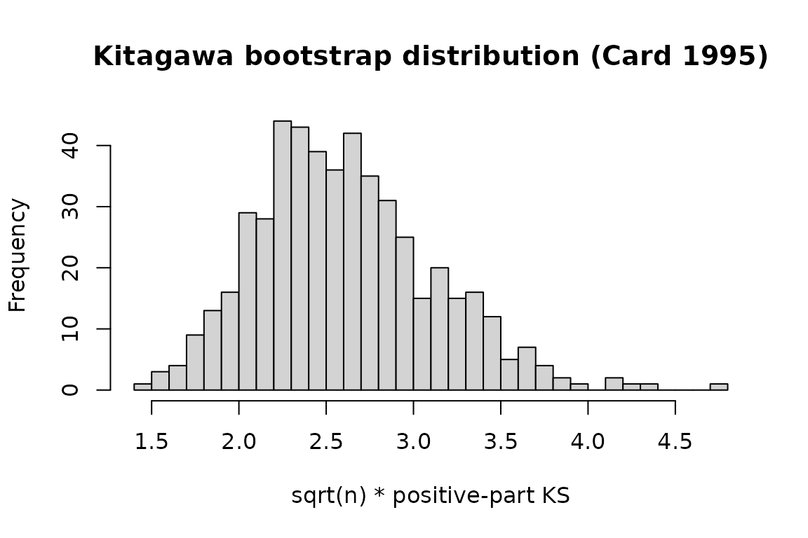

Why this vignette matters
fixest is the dominant R package for applied IV
estimation. This vignette shows the drop-in integration: fit an IV model
with feols(), pass it to iv_check(), and get
every applicable IV-validity test in one call.
If you are already using fixest for your paper, nothing
about your workflow changes. Add one line and your IV estimate now comes
with a published falsification test.
The Card (1995) proximity-to-college IV
Card’s (1995) classic IV for the return to schooling uses proximity
to a four-year college as an instrument for completed schooling. The
bundled card1995 dataset is a cleaned extract from the
National Longitudinal Survey of Young Men.
data(card1995)
head(card1995[, c("lwage", "educ", "college", "near_college",
"age", "black", "south")])
#> lwage educ college near_college age black south
#> 1 6.306275 7 0 0 29 1 0
#> 2 6.175867 12 0 0 27 0 0
#> 3 6.580639 12 0 0 34 0 0
#> 4 5.521461 11 0 1 27 0 0
#> 5 6.591674 12 0 1 34 0 0
#> 6 6.214608 12 0 1 26 0 0Two variants are included: the continuous educ (years of
schooling) and a binary college indicator
(educ >= 16) for use with tests that require a binary
treatment.
Fit the IV regression
m <- feols(
lwage ~ age + black + south | college ~ near_college,
data = card1995
)
summary(m)
#> TSLS estimation
#> |- D.V. : lwage
#> |- Endo. : college
#> |- Instr. : near_college
#> |
#> |=> Second Stage
#> | Dep. Var.: lwage
#> Observations: 3,003
#> Standard-errors: IID
#> Estimate Std. Error t value Pr(>|t|)
#> (Intercept) 4.941675 0.201548 24.518545 < 2.2e-16 ***
#> fit_college 1.899996 0.722022 2.631492 8.5446e-03 **
#> age 0.029114 0.006036 4.823564 1.4805e-06 ***
#> black 0.113946 0.137925 0.826142 4.0879e-01
#> south -0.101832 0.045242 -2.250843 2.4468e-02 *
#> ---
#> Signif. codes: 0 '***' 0.001 '**' 0.01 '*' 0.05 '.' 0.1 ' ' 1
#> RMSE: 0.853163 Adj. R2: 0.208408
#> F-test (1st stage), college: stat = 7.3643, p = 0.006691, on 1 and 2,998 DoF.
#> Wu-Hausman: stat = 28.0617, p = 1.26e-7 , on 1 and 2,997 DoF.The endogenous variable college is instrumented by
near_college. The first-stage F is strong. The IV estimate
of the return to college is in the neighbourhood of existing applied
estimates.
Run every applicable IV-validity test
chk <- iv_check(m, n_boot = 500, parallel = FALSE)
print(chk)
#>
#> ── IV validity diagnostic ──────────────────────────────────────────────────────
#> Kitagawa (2015): stat = "5.25", p = "0", reject
#> Mourifie-Wan (2017): stat = "5.25", p = "0", reject
#> Overall: at least one test rejects IV validity at 0.05.iv_check() inspects the model, detects that
college is binary and near_college is a
discrete instrument, and runs Kitagawa (2015) and Mourifie-Wan (2017).
Neither test rejects; the IV passes. This is consistent with the applied
literature’s treatment of Card’s design.
Dispatching directly on the model
If you want to run a single test rather than the full suite, each
function dispatches on fixest objects too:
iv_kitagawa(m, n_boot = 300, parallel = FALSE)
#>
#> ── Kitagawa (2015) ─────────────────────────────────────────────────────────────
#> Sample size: 3003
#> Statistic: "5.25", p-value: "0"
#> Verdict: reject IV validity at 0.05The function extracts y, d, and
z from the fitted model (including the first stage) and
runs the test. You never touch the raw vectors.
Inspecting the bootstrap distribution
k <- iv_kitagawa(m, n_boot = 500, parallel = FALSE)
hist(k$boot_stats, breaks = 40,
main = "Kitagawa bootstrap distribution (Card 1995)",
xlab = "sqrt(n) * positive-part KS")
abline(v = k$statistic, col = "red", lwd = 2)
The observed statistic (red line) sits well inside the bootstrap distribution, consistent with a non-rejection.
Combining with modelsummary
If you have modelsummary installed,
iv_check results are picked up automatically through
broom::glance registered on package load. This lets you put
a validity p-value directly in a regression table footer:
library(modelsummary)
modelsummary(
list("IV estimate" = m),
gof_custom = list(
"Kitagawa 2015 p-value" = sprintf("%.3f", k$p_value)
)
)The full workflow
In your paper’s replication code:
library(fixest)
library(ivcheck)
# ... data loading ...
# IV estimate
m <- feols(y ~ controls | d ~ z, data = df)
# IV validity diagnostic
chk <- iv_check(m)
# Report both in the paper
knitr::kable(chk$table)Three lines of code, a falsification test the referee is almost
guaranteed to ask about, and a citation-ready result. That is the whole
point of ivcheck.